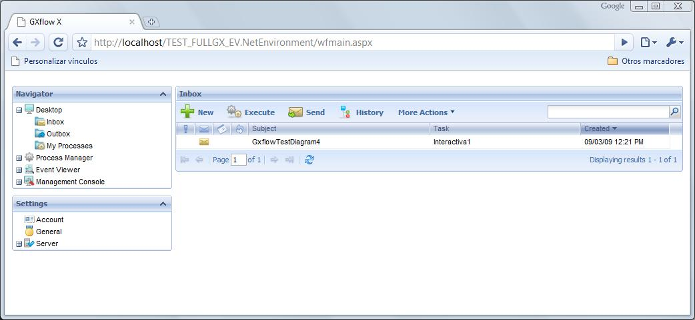

To hide the GXflow header you can do the following: Add this code at the end of the gxui-all.js file.
gxui.afterShow(function(){
Ext.getCmp('gxui--wfmain-Layout-North').hide().collapse();
}, window);
You can find this file in:
The GXflow client will look like this:  Note: This tip can be useful when you want to use the GXflow client embebed in a web site frame.
|